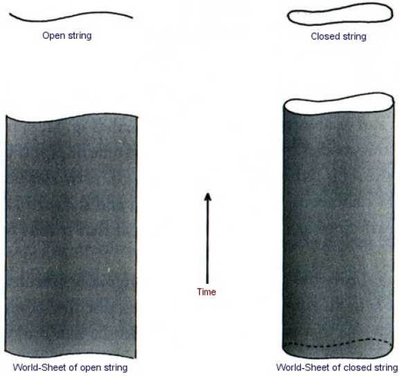
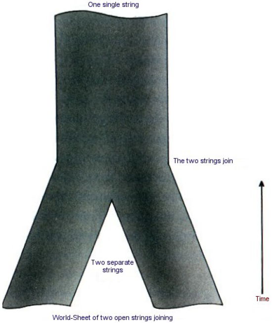
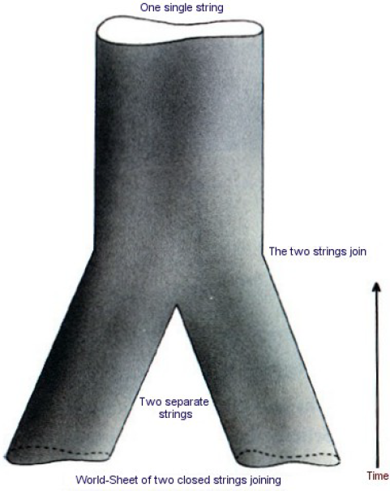
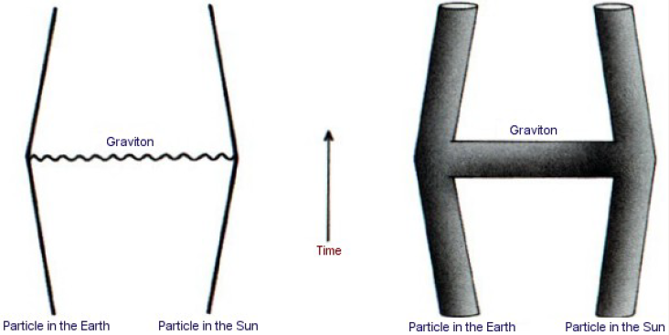
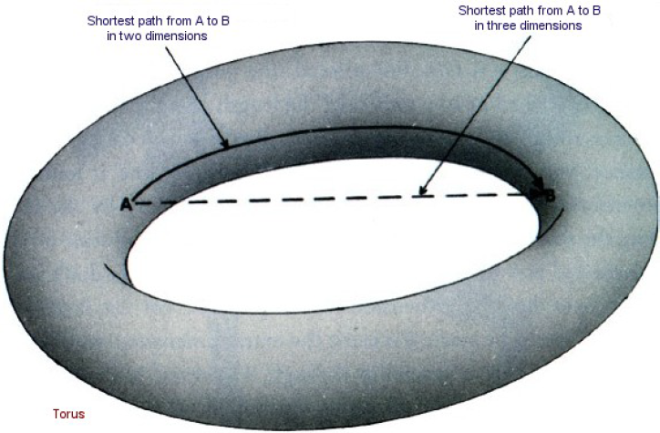
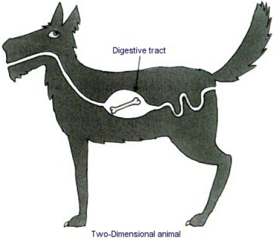

CHAPTER 11 THE UNIFICATION OF PHYSICS
第十一章 物理学的统一
As was explained in the first chapter, it would be very difficult to construct a complete unified theory of everything in the universe all at one go. So instead we have made progress by finding partial theories that describe a limited range of happenings and by neglecting other effects or approximating them by certain numbers. (Chemistry, for example, allows us to calculate the interactions of atoms, without knowing the internal structure of an atom’s nucleus.) Ultimately, however, one would hope to find a complete, consistent, unified theory that would include all these partial theories as approximations, and that did not need to be adjusted to fit the facts by picking the values of certain arbitrary numbers in the theory. The quest for such a theory is known as “the unification of physics.” Einstein spent most of his later years unsuccessfully searching for a unified theory, but the time was not ripe: there were partial theories for gravity and the electromagnetic force, but very little was known about the nuclear forces. Moreover, Einstein refused to believe in the reality of quantum mechanics, despite the important role he had played in its development. Yet it seems that the uncertainty principle is a fundamental feature of the universe we live in. A successful unified theory must, therefore, necessarily incorporate this principle.
正如在第一章中所解释的，一下子建立一个包括宇宙中每一件东西的完整的统一理论是非常困难的。取而代之，我们在寻求描述发生在有限范围的部分理论方面取得了进步。我们忽略了其他效应，或者将它们用一定的数字来近似。（例如，当我们用化学来计算原子间的相互作用时，可以不管原子核内部的结构。）然而，最终人们希望找到一个完整的、协调的、将所有这些部分理论当作它的近似的统一理论。在这理论中不需要选取特定的任意数值去符合事实。寻找这样的一个理论被称之为“物理学的统一”。爱因斯坦用他晚年的大部分时间去寻求一个统一理论，但是没有成功，因为尽管已有了引力和电磁力的部份理论，但关于核力还知道得非常少，所以时间还没成熟。并且，尽管他本人对量子力学的发展起过重要作用，但他拒绝相信它的真实性。看来，不确定性原理还是我们在其中生活的宇宙的一个基本特征。所以，一个成功的统一理论必须将这个原理合并进去。
As I shall describe, the prospects for finding such a theory seem to be much better now because we know so much more about the universe. But we must beware of overconfidence – we have had false dawns before! At the beginning of this century, for example, it was thought that everything could be explained in terms of the properties of continuous matter, such as elasticity and heat conduction. The discovery of atomic structure and the uncertainty principle put an emphatic end to that. Then again, in 1928, physicist and Nobel Prize winner Max Born told a group of visitors to Gottingen University, “Physics, as we know it, will be over in six months.” His confidence was based on the recent discovery by Dirac of the equation that governed the electron. It was thought that a similar equation would govern the proton, which was the only other particle known at the time, and that would be the end of theoretical physics. However, the discovery of the neutron and of nuclear forces knocked that one on the head too. Having said this, I still believe there are grounds for cautious optimism that we may now be near the end of the search for the ultimate laws of nature.
正如我将描述的，由于我们对宇宙知道得这么多，现在找到这样的一个理论的前景似乎是好得多了。但是我们必须小心，不要过份自信——我们在过去有过错误的奢望！例如，在本世纪初，曾经以为每件东西都可以按照连续物质（诸如弹性和热导）的性质予以解释。原子结构和不确定性原理的发现使之彻底破产。然后又有一次，1928年物理学家、诺贝尔奖获得者马克斯·玻恩告诉一群来哥丁根大学的访问者：“据我们所知，物理学将在6个月之内结束。”他的信心是基于狄拉克新近发现的能够制约电子的方程。人们认为质子——这个当时仅知的另一种粒子——服从类似的方程，并且这是理论物理的终结。然而，中子和核力的发现对此又是当头一棒。讲到这些，在谨慎乐观的基础上，我仍然相信，我们可能已经接近于探索自然的终极定律的终点。
In previous chapters I have described general relativity, the partial theory of gravity, and the partial theories that govern the weak, the strong, and the electromagnetic forces. The last three may be combined in so-called grand unified theories, or GUTs, which are not very satisfactory because they do not include gravity and because they contain a number of quantities, like the relative masses of different particles, that cannot be predicted from the theory but have to be chosen to fit observations. The main difficulty in finding a theory that unifies gravity with the other forces is that general relativity is a “classical” theory; that is, it does not incorporate the uncertainty principle of quantum mechanics. On the other hand, the other partial theories depend on quantum mechanics in an essential way. A necessary first step, therefore, is to combine general relativity with the uncertainty principle. As we have seen, this can produce some remarkable consequences, such as black holes not being black, and the universe not having any singularities but being completely self-contained and without a boundary. The trouble is, as explained in Chapter 7, that the uncertainty principle means that even “empty” space is filled with pairs of virtual particles and antiparticles. These pairs would have an infinite amount of energy and, therefore, by Einstein’s famous equation E = mc2, they would have an infinite amount of mass. Their gravitational attraction would thus curve up the universe to infinitely small size.
在前几章中，我描述了引力的部分理论即广义相对论和制约弱、强和电磁力的部分理论。这后三种理论可以合并成为所谓的大统一理论（GUT）。这个理论并不令人非常满意，因为它没有包括引力，并且因为包含譬如不同粒子的相对质量等不能从理论预言，而必须人为选择以适合观测的一些量。要找到一个将引力和其他力相统一的理论，困难在于广义相对论是一个“经典”理论；也就是说，它没有将量子力学不确定性原理合并在里面。另一方面，其他的部分理论以非常基本的形式依赖于量子力学，所以第一步必须将广义相对论和量子力学结合在一起。正如我们已经看到的，这能产生一些显著的推论，例如黑洞不是黑的；宇宙没有任何奇点并且是完全自足的、没有边界的。正如第七章 所解释的，麻烦在于不确定性原理意味着甚至“空的”空间也是充满了虚的粒子和反粒子，这些粒子对具有无限的能量，并且由爱因斯坦的著名方程E＝mc2可知，这些粒子具有无限的质量。这样，它们的引力的吸引就会将宇宙卷曲到无限小的尺度。
Rather similar, seemingly absurd infinities occur in the other partial theories, but in all these cases the infinities can be canceled out by a process called renormalization. This involves canceling the infinities by introducing other infinities. Although this technique is rather dubious mathematically, it does seem to work in practice, and has been used with these theories to make predictions that agree with observations to an extraordinary degree of accuracy. Renormalization, however, does have a serious drawback from the point of view of trying to find a complete theory, because it means that the actual values of the masses and the strengths of the forces cannot be predicted from the theory, but have to be chosen to fit the observations.
相当类似地，在其他部分理论中也发生颇似荒谬的无限大，然而，所有这些情形下的无限大都可用称之为重正化的过程消除掉。这牵涉到引入其他的无限大去消除这些无限大。虽然在数学上这个技巧相当令人怀疑，而在实际上似乎确实行得通，并用来和这些理论一起作出预言，这预言极其精确地和观测相一致。然而，从企图找到一个完全理论的观点看，由于重正化意味着质量和力的强度的实际值不能从理论中得到预言，必须被选择以去适合观测，因此重正化有一严重的缺陷。
In attempting to incorporate the uncertainty principle into general relativity, one has only two quantities that can be adjusted: the strength of gravity and the value of the cosmological constant. But adjusting these is not sufficient to remove all the infinities. One therefore has a theory that seems to predict that certain quantities, such as the curvature of space-time, are really infinite, yet these quantities can be observed and measured to be perfectly finite! This problem in combining general relativity and the uncertainty principle had been suspected for some time, but was finally confirmed by detailed calculations in 1972. Four years later, a possible solution, called “supergravity,” was suggested. The idea was to combine the spin-2 particle called the graviton, which carries the gravitational force, with certain other particles of spin 3/2, 1, ½, and 0. In a sense, all these particles could then be regarded as different aspects of the same “superparticle,” thus unifying the matter particles with spin ½ and 3/2 with the force-carrying particles of spin 0, 1, and 2. The virtual particle/antiparticle pairs of spin ½ and 3/2 would have negative energy, and so would tend to cancel out the positive energy of the spin 2, 1, and 0 virtual pairs. This would cause many of the possible infinities to cancel out, but it was suspected that some infinities might still remain. However, the calculations required to find out whether or not there were any infinities left uncancelled were so long and difficult that no one was prepared to undertake them. Even with a computer it was reckoned it would take at least four years, and the chances were very high that one would make at least one mistake, probably more. So one would know one had the right answer only if someone else repeated the calculation and got the same answer, and that did not seem very likely!
试图将不确定性原理合并到广义相对论时，人们只有两个可以调整的量：引力强度和宇宙常数的值。但是调整它们不足以消除所有的无穷大。所以人们得到一个理论，它似乎预言了诸如空间一时间的曲率的某些量真的是无穷大，但是观察和测量表明它们地地道道是有限的！奇Qīsuū.сom书人们对于合并广义相对论和不确定性原理的问题怀疑了许久，直到1972年才为仔细的计算所最后确证。4年之后，人们提出了一种叫做“超引力”的可能的解答。它的思想是将携带引力的自旋为2称为引力子的粒子和某些其他具有自旋为3/2、1、1/2和0的新粒子结合在一起。在某种意义上，所有这些粒子可认为是同一“超粒子”的不同侧面。这样就将自旋为1/2和3/2的物质粒子和自旋为0、1和2的携带力的粒子统一起来了。自旋1/2和3/2的虚的粒子反粒子对具有负能量，因此抵消了自旋为2、1和0的虚的粒子对的正能量。这就使得许多可能的无限大被抵消掉。但是人们怀疑，某些无穷大仍然存在。然而，人们需要找出是否还留下未被抵消的无穷大，这计算是如此之冗长和困难，以至于没有人会准备着手去进行。即使使用一个计算机，预料至少要用4年功夫，而且犯至少一个或更多错误的机会是非常高的。这样，只有其他人重复计算，并得到同样的答案，人们才能判断已取得了正确的答案，但这似乎是不太可能的！
observed particles, most scientists believed that supergravity was probably the right answer to the problem of the unification of physics. It seemed the best way of unifying gravity with the other forces. However, in 1984 there was a remarkable change of opinion in favor of what are called string theories. In these theories the basic objects are not particles, which occupy a single point of space, but things that have a length but no other dimension, like an infinitely thin piece of string. These strings may have ends (the so-called open strings) or they may be joined up with themselves in closed loops (closed strings) Figure 11:1 and Figure 11:2.
尽管存在这些问题，尽管超引力理论中的粒子似乎不与观察到的粒子相符合的这一事实，大部分科学家仍然相信，超引力可能是对于物理学统一问题的正确答案。看来它是将引力和其他力相统一起来的最好办法。然而1984年，人们的看法显著地改变为更喜欢所谓的弦理论。在这些理论中，基本的对象不再是只占空间单独的点的粒子，而是只有长度而没有其他线度、像是一根无限细的弦这样的东西。这些弦可以有端点（所谓的开弦），或它们可以自身首尾相接成闭合的圈子（闭弦）（图11.1和图11.2）。
A particle occupies one point of space at each instant of time. Thus its history can be represented by a line in space-time (the “world-line”). A string, on the other hand, occupies a line in space at each moment of time. So its history in space-time is a two-dimensional surface called the world-sheet. (Any point on such a world-sheet can be described by two numbers, one specifying the time and the other the position of the point on the string.) The world-sheet of an open string is a strip: its edges represent the paths through space-time of the ends of the string Figure 11:1. The world-sheet of a closed string is a cylinder or tube Figure 11:2: a slice through the tube is a circle, which represents the position of the string at one particular time.
在每一时刻每一个粒子占据空间的一点。这样，它的历史可以在空间一时间用一根线代表（“世界线”）。另一方面，在每一时刻一根弦占据空间的一根线。所以它在时空里的历史是一个叫做世界片的二维面（在这世界片上的任一点都可用两个数来描述：一个指明时间，另一个指明这一点在弦上的位置。）一根开弦的世界片是一带子，它的边缘代表弦的端点通过时空的路径（图11.1）；一根闭弦的世界片是一个圆柱或一个管（图11.2）；一个管的截面是一个圈，它代表在一特定时刻的弦的位置。
Two pieces of string can join together to form a single string; in the case of open strings they simply join at the ends Figure 11:3, while in the case of closed strings it is like the two legs joining on a pair of trousers Figure 11:4.
两根弦可以连接在一起，形成一根单独的弦。在开弦的情形下只要将它们端点连在一起即可（图11.3）；在闭弦的情形下，像是两条裤腿合并成一条裤子（图11.4）。
 Similarly, a single piece of string can divide into two strings. In string theories, what were previously thought of as particles are now pictured as waves traveling down the string, like waves on a vibrating kite string. The emission or absorption of one particle by another corresponds to the dividing or joining together of strings. For example, the gravitational force of the sun on the earth was pictured in particle theories as being caused by the emission of a graviton by a particle in the sun and its absorption by a particle in the earth Figure 11:5.
类似地，一根单独的弦可以分成两根弦。在弦理论中，原先以为是粒子的东西，现在被描绘成在弦里传播的波动，如同振动着的风筝的弦上的波动。一个粒子从另一个粒子发射出来或者被吸收，对应于弦的分解和合并。例如，太阳作用到地球上的引力，在粒子理论中被描述成由太阳上的粒子发射出并被地球上的粒子所吸收的引力子（图11.5）。
In string theory, this process corresponds to an H-shaped tube or pipe Figure 11:6 (string theory is rather like plumbing, in a way). The two vertical sides of the H correspond to the particles in the sun and the earth, and the horizontal crossbar corresponds to the graviton that travels between them.
在弦理论中，这个过程相应于一个H形状的管（图11.6）（弦理论有点像管道工程）。H的两个垂直的边对应于太阳和地球上的粒子，而水平的横杠对应于在它们之间传递的引力子。
String theory has a curious history. It was originally invented in the late 1960s in an attempt to find a theory to describe the strong force. The idea was that particles like the proton and the neutron could be regarded as waves on a string. The strong forces between the particles would correspond to pieces of string that went between other bits of string, as in a spider’s web. For this theory to give the observed value of the strong force between particles, the strings had to be like rubber bands with a pull of about ten tons.
弦理论有一个古怪的历史。它原先是60年代后期发明来试图找出一个描述强作用的理论。其方法是，诸如质子和中子这样的粒子可被认为是一根弦上的波动。这些粒子之间的强作用力对应于连接于其他一些弦之间的弦的片段——正如蜘蛛网一样。这弦必须像具有大约10吨拉力的橡皮带，才能使理论给出粒子之间强作用力的观察值。
In 1974 Joel Scherk from Paris and John Schwarz from the California Institute of Technology published a paper in which they showed that string theory could describe the gravitational force, but only if the tension in the string were very much higher, about a thousand million million million million million million tons (1 with thirty-nine zeros after it). The predictions of the string theory would be just the same as those of general relativity on normal length scales, but they would differ at very small distances, less than a thousand million million million million millionth of a centimeter (a centimeter divided by 1 with thirty-three zeros after it). Their work did not receive much attention, however, because at just about that time most people abandoned the original string theory of the strong force in favor of the theory based on quarks and gluons, which seemed to fit much better with observations. Scherk died in tragic circumstances (he suffered from diabetes and went into a coma when no one was around to give him an injection of insulin). So Schwarz was left alone as almost the only supporter of string theory, but now with the much higher proposed value of the string tension.
1974年，巴黎的朱勒·谢尔克和加州理工学院的约翰·施瓦兹发表了一篇论文，指出弦理论可以描述引力，但是只不过其张力要大得多，大约是1000万亿亿亿亿吨（1后面跟39个0）。在通常尺度下，弦理论和广义相对论的预言是相同的，但在非常小的尺度下，比10亿亿亿亿分之一厘米（1厘米被1后面跟33个0除）更小时，它们就不一样了。然而，他们的工作并没有引起很大的注意，因为大约正是那时候。大多数人抛弃了原先的强作用力的弦理论，而倾心于夸克和胶子的理论，后者似乎和观测符合得好得多。谢尔克死得很惨（他受糖尿病折磨，在周围没人给他注射胰岛素时昏迷死去）。这样一来，施瓦兹几乎成为弦理论的唯一支持者，只不过现在设想的弦张力要大得多而已。
In 1984 interest in strings suddenly revived, apparently for two reasons. One was that people were not really making much progress toward showing that supergravity was finite or that it could explain the kinds of particles that we observe. The other was the publication of a paper by John Schwarz and Mike Green of Queen Mary College, London, that showed that string theory might be able to explain the existence of particles that have a built-in left-handedness, like some of the particles that we observe. Whatever the reasons, a large number of people soon began to work on string theory and a new version was developed, the so-called heterotic string, which seemed as if it might be able to explain the types of particles that we observe.
1984年，因为两个明显的原因，人们对弦理论的兴趣突然复活。一个原因是，在证明超引力是有限的，以及解释我们观察到的粒子的种类方面，人们未能真正取得进展。另一个原因是，约翰·施瓦兹和伦敦玛丽皇后学院的麦克·格林发表的一篇论文指出，弦理论可以解释内禀的左旋性的粒子存在，正如我们观察到的一些粒子那样。不管是什么原因，大量的人很快开始作弦理论的研究，而且发展了称之为异形弦的新形式，这种形式似乎能够解释我们观测到的粒子类型。
String theories also lead to infinities, but it is thought they will all cancel out in versions like the heterotic string (though this is not yet known for certain). String theories, however, have a bigger problem: they seem to be consistent only if space-time has either ten or twenty-six dimensions, instead of the usual four! Of course, extra space-time dimensions are a commonplace of science fiction indeed, they provide an ideal way of overcoming the normal restriction of general relativity that one cannot travel faster than light or back in time (see Chapter 10). The idea is to take a shortcut through the extra dimensions. One can picture this in the following way. Imagine that the space we live in has only two dimensions and is curved like the surface of an anchor ring or torus Figure 11:7.
弦理论也导致无穷大，但是人们认为，它们在一种类似异形弦的变体中会被消除掉（虽然这一点还没被确认）。然而，弦理论有更大的问题：似乎只有当时空是十维或二十六维，而不是通常的四维时它们才是协调的！当然，额外的时空维数是科学幻想的老生常谈；的确，它们几乎是必不可少的，因为否则相对论对人们不能旅行得比光更快的限制意味着，由于要花这么长的时间，以至于在恒星和星系之间的旅行成为不可能。科学幻想的办法是，人们可以通过更高的维数抄近路。这一点可用以下方法描述。想像我们生活的空间只有二维，并且弯曲成像一个锚圈或环的表面（图11.7）。
If you were on one side of the inside edge of the ring and you wanted to get to a point on the other side, you would have to go round the inner edge of the ring. However, if you were able to travel in the third dimension, you could cut straight across.
如果你是处在这圈的内侧的一边而要到另一边去，你必须沿着圈的内边缘走一圈。然而，你如果允许在第三维空间里旅行，则可以直穿过去。
Why don’t we notice all these extra dimensions, if they are really there? Why do we see only three space dimensions and one time dimension? The suggestion is that the other dimensions are curved up into a space of very small size, something like a million million million million millionth of an inch. This is so small that we just don’t notice it: we see only one time dimension and three space dimensions, in which space-time is fairly flat. It is like the surface of a straw. If you look at it closely, you see it is two-dimensional (the position of a point on the straw is described by two numbers, the length along the straw and the distance round the circular direction). But if you look at it from a distance, you don’t see the thickness of the straw and it looks one-dimensional (the position of a point is specified only by the length along the straw). So it is with space-time: on a very small scale it is ten-dimensional and highly curved, but on bigger scales you don’t see the curvature or the extra dimensions. If this picture is correct, it spells bad news for would-be space travelers: the extra dimensions would be far too small to allow a spaceship through. However, it raises another major problem. Why should some, but not all, of the dimensions be curled up into a small ball? Presumably, in the very early universe all the dimensions would have been very curved. Why did one time dimension and three space dimensions flatten out, while the other dimensions remain tightly curled up?
如果这些额外的维数确实存在，为什么我们没有觉察到它们呢？为何我们只看到三维空间和一维时间呢？一般认为，其他的维数被弯卷到非常小的尺度——大约为1英寸的100万亿亿亿分之一的空间，人们根本无从觉察这么小的尺度。我们只能看到一个时间和三个空间的维数，这儿时空是相当平坦的。这正如一个桔子的表面：如果你靠非常近去看，它是坑坑洼洼的并有皱纹；但若离开一定的距离，你就看不见高低起伏而显得很光滑。对于时空亦是如此。因此在非常小的尺度下，时空是十维的，并且是高度弯曲的；但在更大的尺度下，你看不见曲率或者额外的维数。如果这个图像是正确的，对于自愿的空间旅行者来讲是个坏消息，额外附加的维实在是太小了，以至于不能允许空间飞船通过。然而，它引起了另一个重要问题：为何是一些而不是所有的维数被卷曲成一个小球？也许在宇宙的极早期所有的维都曾经非常弯曲过。为何一维时间和三维空间摊平开来，而其他的维仍然紧紧地卷曲着？
One possible answer is the anthropic principle. Two space dimensions do not seem to be enough to allow for the development of complicated beings like us. For example, two-dimensional animals living on a one-dimensional earth would have to climb over each other in order to get past each other. If a two-dimensional creature ate something it could not digest completely, it would have to bring up the remains the same way it swallowed them, because if there were a passage right through its body, it would divide the creature into two separate halves: our two-dimensional being would fall apart Figure 11:8. Similarly, it is difficult to see how there could be any circulation of the blood in a two-dimensional creature.
人择原理可能提供一个答案。二维空间似乎不足以允许像我们这样复杂生命的发展。例如，如果二维动物吃东西时不能将之完全消化，则它必须将其残渣从吞下食物的同样通道吐出来；因为如果有一个穿通全身的通道，它就将这生物分割成两个分开的部分，我们的二维动物就解体了（图10.8）。类似的，在二维动物身上实现任何血液循环都是非常困难的。
There would also be problems with more than three space dimensions. The gravitational force between two bodies would decrease more rapidly with distance than it does in three dimensions. (In three dimensions, the gravitational force drops to 1/4 if one doubles the distance. In four dimensions it would drop to 1/5, in five dimensions to 1/6, and so on.) The significance of this is that the orbits of planets, like the earth, around the sun would be unstable: the least disturbance from a circular orbit (such as would be caused by the gravitational attraction of other planets) would result in the earth spiraling away from or into the sun. We would either freeze or be burned up. In fact, the same behavior of gravity with distance in more than three space dimensions means that the sun would not be able to exist in a stable state with pressure balancing gravity. It would either fall apart or it would collapse to form a black hole. In either case, it would not be of much use as a source of heat and light for life on earth. On a smaller scale, the electrical forces that cause the electrons to orbit round the nucleus in an atom would behave in the same way as gravitational forces. Thus the electrons would either escape from the atom altogether or would spiral into the nucleus. In either case, one could not have atoms as we know them.
多于三维的空间维数也有问题。两个物体之间的引力将随距离衰减得比在三维空间中更快。（在三维空间内，如果距离加倍则引力减少到1/4。在四维空间减少到1/8，五维空间1/16，等等。）其意义在于使像地球这样绕着太阳的行星的轨道变得不稳定，地球偏离圆周轨道的最小微扰（例如由于其他行星的引力吸引）都会引起它以螺旋线的轨道向外离开或向内落到太阳上去。我们就会被冻死或者被烧死。事实上，在维数多于三维的空间中，引力随距离变化的同样行为意味着，太阳不可能由于压力和引力相平衡，而存在于一个稳定的状态，它若不被分解就会坍缩形成黑洞。在任一情况下，作为地球上生命的热和光的来源来说，它没有多大用处。在小尺度下，原子里使电子绕着原子核运动的电力行为正和引力一样，这样电子或者从原子逃逸出去，或者以螺旋的轨道落到原子核上去。在任一情形下，都不存在我们所知道的原子。
It seems clear then that life, at least as we know it, can exist only in regions of space-time in which one time dimension and three space dimensions are not curled up small. This would mean that one could appeal to the weak anthropic principle, provided one could show that string theory does at least allow there to be such regions of the universe – and it seems that indeed string theory does. There may well be other regions of the universe, or other universes (whatever that may mean), in which all the dimensions are curled up small or in which more than four dimensions are nearly flat, but there would be no intelligent beings in such regions to observe the different number of effective dimensions.
看来很清楚，至少如我们所知，生命只能存在于一维时间和三维空间没被卷曲得很小的时空区域里。这表明，只要人们可以证明弦理论至少允许存在宇宙的这样的区域——似乎弦理论确实能做到这一点，则我们可以用弱人择原理。同样，也会存在宇宙的其他区域或其他宇宙（不管那是什么含意），那里所有的维都被卷曲得很小，或者多于四维几乎是平坦的。但在这样的区域里，不会有智慧生物去观察这有效维数的不同数目。
Another problem is that there are at least four different string theories (open strings and three different closed string theories) and millions of ways in which the extra dimensions predicted by string theory could be curled up. Why should just one string theory and one kind of curling up be picked out? For a time there seemed no answer, and progress got bogged down. Then, from about 1994, people started discovering what are called dualities: different string theories and different ways of curling up the extra dimensions could lead to the same results in four dimensions. Moreover, as well as particles, which occupy a single point of space, and strings, which are lines, there were found to be other objects called p-branes, which occupied two-dimensional or higher-dimensional volumes in space. (A particle can be regarded as a 0-brane and a string as a 1-brane but there were also p-branes for p=2 to p=9.) What this seems to indicate is that there is a sort of democracy among supergravity, string, and p-brane theories: they seem to fit together but none can be said to be more fundamental than the others. They appear to be different approximations to some fundamental theory that are valid in different situations.
另一个问题是存在至少四种不同的弦理论（开弦和三种不同的闭弦理论），以及由弦理论预言的额外维的极其繁多的卷曲方式。为何自然只挑选一种弦理论和一种卷曲方式？这问题一度似乎没有答案，因而无法向前进展。后来，大约从1994年开始，人们发现了所谓的对偶性：不同的弦理论以及额外维的不同卷曲方式会导致四维时空中的同样结果。不仅如此，正如在空间中占据一点的粒子，也像空间中线状的弦，还存在另一种称作P-膜的东西，它在空间里占据二维或更高维的体积。（粒子可认为是O-膜，而弦为1-膜，但是还存在P从2到9的P-膜）。这似乎表明，在超引力、弦以及P膜理论中存在某种民主：它们似乎和平相处，没有一种比另一种更基本。看起来，它们是对某种基本理论的不同近似，而且在不同的情形下成立。
People have searched for this underlying theory, but without any success so far. However, I believe there may not be any single formulation of the fundamental theory any more than, as Godel showed, one could formulate arithmetic in terms of a single set of axioms. Instead it may be like maps – you can’t use a single map to describe the surface of the earth or an anchor ring: you need at least two maps in the case of the earth and four for the anchor ring to cover every point. Each map is valid only in a limited region, but different maps will have a region of overlap. The collection of maps provides a complete description of the surface. Similarly, in physics it may be necessary to use different formulations in different situations, but two different formulations would agree in situations where they can both be applied. The whole collection of different formulations could be regarded as a complete unified theory, though one that could not be expressed in terms of a single set of postulates.
人们探索了这个基本理论，但是迄今毫无成就。因为哥德尔指出，不可能用单独的一组公理系统来表述算术。我相信这儿的情形不可能比它更好，基本理论不可能存在单独的表述。这犹如你不可能只用一张单独的地图去描述地球或者锚圈的表面：在地球的情形下，你至少需要两张地图去覆盖每一点，而在锚圈的情形下，则需要四张。每张地图只对一个有限的区域有效，但是不同的地图有一个交叠的区域。整族地图就为该表面提供了完整的描述。类似地，在物理学中对不同的情形需要使用不同的表述，但是两种不同表述在它们都适用的情形下要相互一致。整族不同的表述可以被认为是完整的统一理论，尽管它不是依照单独的假设集合表达的理论。
But can there really be such a unified theory? Or are we perhaps just chasing a mirage? There seem to be three possibilities:
但是，确实存在这样的一个统一理论吗？或者我们也许仅仅是在追求海市屋楼。看来存在三种可能性：
1 There really is a complete unified theory (or a collection of overlapping formulations), which we will someday discover if we are smart enough.
（1）确实存在一个完整的统一理论，如果我们足够聪明的话，总有一天将会找到它。
2 There is no ultimate theory of the universe, just an infinite sequence of theories that describe the universe more and more accurately.
（2）并不存在宇宙的最终理论，仅仅存在一个越来越精确地描述宇宙的无限的理论序列。
3 There is no theory of the universe: events cannot be predicted beyond a certain extent but occur in a random and arbitrary manner.
（3）并不存在宇宙的理论；事件在一定程度之外不可能被预言，仅仅是以一种紊乱或任意的方式发生。
Some would argue for the third possibility on the grounds that if there were a complete set of laws, that would infringe God’s freedom to change his mind and intervene in the world. It’s a bit like the old paradox: can God make a stone so heavy that he can’t lift it? But the idea that God might want to change his mind is an example of the fallacy, pointed out by St. Augustine, of imagining God as a being existing in time: time is a property only of the universe that God created. Presumably, he knew what he intended when he set it up!
有些人基于以下理由会赞同第三种可能，如果存在一套完整的定律，这将侵犯上帝改变其主意并对世界进行干涉的自由。这有点像那古老的二律背反：上帝能制造一个重到以至于它也不能将其举起的石块吗？但是上帝可能要改变主意的这一思想，这正如圣·奥古斯丁指出的，是一个想像上帝存在在时间里的虚妄的例子：时间只是上帝创造的宇宙的一个性质。可以设想，当它创造宇宙时它知道企图做什么！
With the advent of quantum mechanics, we have come to recognize that events cannot be predicted with complete accuracy but that there is always a degree of uncertainty. If one likes, one could ascribe this randomness to the intervention of God, but it would be a very strange kind of intervention: there is no evidence that it is directed toward any purpose. Indeed, if it were, it would by definition not be random. In modern times, we have effectively removed the third possibility above by redefining the goal of science: our aim is to formulate a set of laws that enables us to predict events only up to the limit set by the uncertainty principle.
随着量子力学的发现，我们认识到，由于总存在一定程度的不确定性，不可能去完全精确地预言事件。如果有人愿意，他可以将此紊乱性归结为上帝的干涉。但这是一种非常奇怪的干涉：没有任何证据表明它具有任何目的。的确，如果它有目的，则按定义就不会是紊乱的。现代由于我们重新定义科学的目标，所以已经有效地排除了上述的第三种可能性：我们的目的只在于表达一套定律，这些定律能使我们在不确定性原理的极限内预言事件。
The second possibility, that there is an infinite sequence of more and more refined theories, is in agreement with all our experience so far. On many occasions we have increased the sensitivity of our measurements or made a new class of observations, only to discover new phenomena that were not predicted by the existing theory, and to account for these we have had to develop a more advanced theory. It would therefore not be very surprising if the present generation of grand unified theories was wrong in claiming that nothing essentially new will happen between the electroweak unification energy of about 100 GeV and the grand unification energy of about a thousand million million GeV. We might indeed expect to find several new layers of structure more basic than the quarks and electrons that we now regard as “elementary” particles.
第二种可能性，也就是存在一无限的越来越精确的理论序列，是和迄今为止我们的经验相符合。在许多场合我们增加了测量的灵敏度，或者进行了新的类型的观测，只是为了发现还没被现有理论预言的新现象，为了囊括这些，我们必须发展更高级的理论。现代的大统一理论预言：在大约100吉电子伏的弱电统一能量和大约1000万亿吉电子伏的大统一能量之间，没有什么本质上新的现象发生。所以，如果这个预言是错的话，人们并不会感到非常惊讶。我们的确可以预料，能够去找几个新的比夸克和电子——这些我们目前以为是“基本”粒子——更基本的结构层次。
However, it seems that gravity may provide a limit to this sequence of “boxes within boxes.” If one had a particle with an energy above what is called the Planck energy, ten million million million GeV (1 followed by nineteen zeros), its mass would be so concentrated that it would cut itself off from the rest of the universe and form a little black hole. Thus it does seem that the sequence of more and more refined theories should have some limit as we go to higher and higher energies, so that there should be some ultimate theory of the universe. Of course, the Planck energy is a very long way from the energies of around a hundred GeV, which are the most that we can produce in the laboratory at the present time. We shall not bridge that gap with particle accelerators in the foreseeable future! The very early stages of the universe, however, are an arena where such energies must have occurred. I think that there is a good chance that the study of the early universe and the requirements of mathematical consistency will lead us to a complete unified theory within the lifetime of some of us who are around today, always presuming we don’t blow ourselves up first.
然而，看来引力可以提供这个“盒子套盒子”的序列的极限。如果人们有一个比1000亿亿（1后面跟19个0）吉电子伏的所谓普郎克能量更高能量的粒子，它的质量就会集中到如此的程度，以至于会脱离宇宙的其他部分，而形成一个小黑洞。这样看来，确实当我们往越来越高的能量去的时候，越来越精密的理论序列应当有某一极限，所以必须有宇宙的终极理论。当然，普郎克能量离开大约几百吉电子伏——目前在实验室中所能产生的最大的能量——非常远，我们不可能在可见的未来用粒子加速器填补其间的差距！然而，宇宙的极早期阶段是这样大能量应该发生的舞台。我以为，早期宇宙的研究和数学一致性的要求，很有可能会导致我们中的某些人在有生之年获得一个完整的统一理论。当然，这一切都是假定我们首先不使自身毁灭的前提下而言的。
What would it mean if we actually did discover the ultimate theory of the universe? As was explained in Chapter 1, we could never be quite sure that we had indeed found the correct theory, since theories can’t be proved. But if the theory was mathematically consistent and always gave predictions that agreed with observations, we could be reasonably confident that it was the right one. It would bring to an end a long and glorious chapter in the history of humanity’s intellectual struggle to understand the universe. But it would also revolutionize the ordinary person’s understanding of the laws that govern the universe. In Newton’s time it was possible for an educated person to have a grasp of the whole of human knowledge, at least in outline. But since then, the pace of the development of science has made this impossible. Because theories are always being changed to account for new observations, they are never properly digested or simplified so that ordinary people can understand them. You have to be a specialist, and even then you can only hope to have a proper grasp of a small proportion of the scientific theories. Further, the rate of progress is so rapid that what one learns at school or university is always a bit out of date. Only a few people can keep up with the rapidly advancing frontier of knowledge, and they have to devote their whole time to it and specialize in a small area. The rest of the population has little idea of the advances that are being made or the excitement they are generating. Seventy years ago, if Eddington is to be believed, only two people understood the general theory of relativity. Nowadays tens of thousands of university graduates do, and many millions of people are at least familiar with the idea. If a complete unified theory was discovered, it would only be a matter of time before it was digested and simplified in the same way and taught in schools, at least in outline. We would then all be able to have some understanding of the laws that govern the universe and are responsible for our existence.
如果我们确实发现了宇宙的终极理论，这意味着什么？正如第一章 所解释的，我们将永远不能肯定我们是否确实找到了正确的理论，因为理论不能被证明。但是如果理论是数学上协调的并且总是给出与观察一致的预言，我们便可以适度地有信心认为它是正确的。它将给人类为理解宇宙的智力斗争历史长期的光辉篇章打上一个休止符。但是，它还会改变常人对制约宇宙定律的理解。在牛顿时代，一个受教育的人至少在梗概上掌握整个人类知识。但从那以后，科学发展的节奏使之不再可能。因为理论总是被改变以囊括新的观察结果，它们从未被消化或简化到使常人能理解。你必须是一个专家，即使如此，你只能希望适当地掌握科学理论的一小部分。另外，其发展的速度是如此之快，以至于在中学和大学所学的总是有点过时。只有少数人可以跟得上知识快速进步的前沿，但他们必须贡献他们的毕生，并局限在一个小的领域里。其余的人对于正在进行的发展和它们产生的激动只有很少的概念。70年以前，如果爱丁顿的话是真的，那么只有两个人理解广义相对论。今天，成千上万的大学研究生能理解、并且几百万人至少熟悉这种思想。如果发现了一套完整的统一理论，以同样方法将其消化并简化，以及在学校里至少讲授其梗概，这只是时间的迟早问题。我们那时就都能够对制约宇宙的定律有所理解，并对我们的存在负责。
Even if we do discover a complete unified theory, it would not mean that we would be able to predict events in general, for two reasons. The first is the limitation that the uncertainty principle of quantum mechanics sets on our powers of prediction. There is nothing we can do to get around that. In practice, however, this first limitation is less restrictive than the second one. It arises from the fact that we could not solve the equations of the theory exactly, except in very simple situations. (We cannot even solve exactly for the motion of three bodies in Newton’s theory of gravity, and the difficulty increases with the number of bodies and the complexity of the theory.) We already know the laws that govern the behavior of matter under all but the most extreme conditions. In particular, we know the basic laws that underlie all of chemistry and biology. Yet we have certainly not reduced these subjects to the status of solved problems: we have, as yet, had little success in predicting human behavior from mathematical equations! So even if we do find a complete set of basic laws, there will still be in the years ahead the intellectually challenging task of developing better approximation methods, so that we can make useful predictions of the probable outcomes in complicated and realistic situations. A complete, consistent, unified theory is only the first step: our goal is a complete understanding of the events around us, and of our own existence.
即使我们发现了一套完整的统一理论，由于两个原因，这并不表明我们能一般地预言事件。第一是我们无法避免不确定性原理给我们的预言能力设立的极限。然而，更为严厉的是第二个限制。它是说，除了非常简单的情形，我们不能准确解出这理论的方程。（在牛顿引力论中，我们甚至连三体运动问题都不能准确地解出，而且随着物体的数目和理论复杂性的增加，困难愈来愈大。）除了在最极端状态下，我们已经知道规范物体行为的定律。特别是，我们知道作为所有化学和生物基础的基本定律。我们肯定还没有将这些学科归结为可解问题的状态；我们在从数学方程来预言人类行为上只取得了很少的成功！所以，即使我们确实找到了基本定律的完整集合，在未来的岁月里，仍存在着发展得更好的近似方法，使得我们在复杂而现实的情形下，能完成对可能结果的有用预言的、这一智慧的、富有挑战性的任务。一个完全的、协调的统一理论只是第一步，我们的目标是完全理解发生在我们周围的事件以及我们自身的存在。